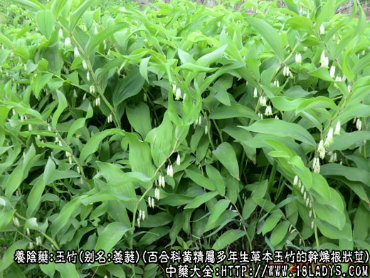
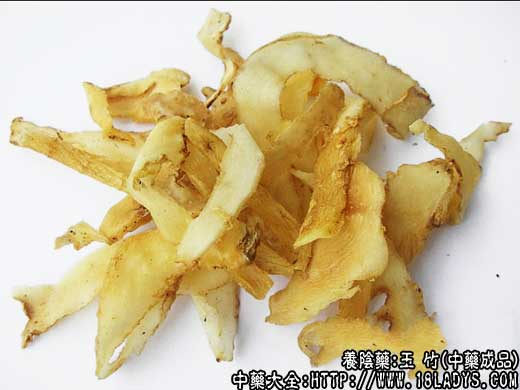
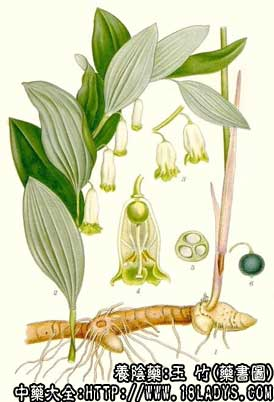

玉竹为常用中药。始载《神农本草经》，列为上品。原名萎蕤。《名医别录》释名玉竹，以表示根茎形状。
别名：萎蕤、尾参（湖南）。
产地：主产于河南、湖北、江苏、安徽、江西、山东、河北等地。栽培或野生。
植物形态：多年生草本，地下根茎横生，长圆柱形，肉质，有明显的环节纹。地上茎单一，稍倾斜向上。叶着生于茎中部以上，互生，无柄，椭圆形或狭椭圆形，先端尖，全缘。花腋生，花被筒状，白色。浆果球形，熟时紫黑色。
采收加工：春秋两季均可采挖，洗净泥土晒至须根干脆易断主体柔软时，反复用手揉搓至须根脱落、主呈半透明、内无生碴硬心时晒干即成。
性状鉴别：本品圆柱形略扁，而稍弯曲，多无分枝。长5～20厘米，直径0.5～1.2厘米。表面淡黄色或淡黄棕色，半透明环节纹明显呈波状稍隆起。质坚硬而脆，受潮则变软，易折断，断面角质样，淡黄色，内碴角质样者为佳。
主要成分：含强心甙、白屈菜、生物硷和维生素A类物质、烟酸、粘液质。
药理作用：养阴润燥，其作用为：
1、强心。动物实验证实有轻度强心和升血压的作用；与党参合用又能改善心肌缺血的心电图不正常。
2、类肾上腺皮质激素作用。在中药对去肾上腺鼠肝糖原含量的影响的试验中，发现玉竹有类似肾上腺皮质激素的作用。
此外，还有润肠通便作用。
炮制：切片生用。
性味：甘、微寒。
归经：入肺、胃经。
功能：养阴润燥，生津止渴。
主治：热病伤阴，烦热口渴，咽干，肺热干咳等症。
临床应用：
1、用于润燥，与沙参、麦冬等配伍治胃燥热、阴虚咳嗽，适应证与沙参同。
2、用于治疗平素阴虚而新患感冒、有风热咳嗽、肺燥等表现的患者。玉竹虽无清热之功、但与解表药同用，在发汗的同时兼顾到滋阴，以防解表药过于发散而伤阴，有其一定价值，方如加减玉竹汤。
3、用于治疗风湿性心脏病，取其有强心而滋养气血的作用，对改善血循环有一定帮助。常配杞子、桂圆肉、麦冬、生姜、大枣等。对低血压者，需重加炙甘草。如为循环衰竭、脉沉细无力，则不能依靠玉竹，需加附子、肉桂。至于有心动过速和血压偏高者，玉竹应慎用，因玉竹能加快心率和升高血压。
4、用于体弱者，可作一般滋补用，但效力较弱而缓，属清补。夏秋季暑热或秋燥时，广东民间常服的“清补凉”，即由玉竹、沙参、莲子、百合、淮山、扁豆等组合成方，有清热、平补而带凉润的作用，故名“清补凉”，对消除感冒烦躁或燥热，有一定帮助，并有轻度的润燥通便的作用。
5、用于冠心病心绞痛，配党参，制成参竹浸膏，适用于气阴两虚型的患者，配冠心二号方同用，效果更好，能减轻心绞痛和改善心电图。
附：
1、对玉竹滋补功力的评价不应过高，前人在推崇为“用代人参”、“用代参、地”、“可代参、芪”，都是过奖之语。实际上，玉竹在滋补上不过于黄精相近（都是在润肺的同时带有一定滋补作用），在润燥上不过于麦冬相似，对于较重的气血亏损玉竹是无济于事的；
2、与天冬比较，玉竹清热利较弱，但养阴而不腻滞；天冬清热利较强，养阴而偏于滋腻。
用量：因玉竹气力平弱，需重用，一般9～15g，用于强心或作炖品料，可用至30～60g。
处方举例：
加减威蕤汤（《通俗伤寒论》）：玉竹9g、生葱白3枚、桔梗4.5g、白薇3g、淡豆豉12g、薄荷3g（后下）、炙甘草1.5g、红枣2枚，水煎服。
参竹浸膏（西苑医院方）：党参9g、玉竹15g，为一口量，作浸膏，分二次服。
注：本品同属植物较多，凡根状呈圆柱形、长条状、粗细均匀、味甜者，均可作玉竹使用。按湖南地区就有猪屎尾参、木萎、竹节萎参、米萎、毛根萎等不同品种。